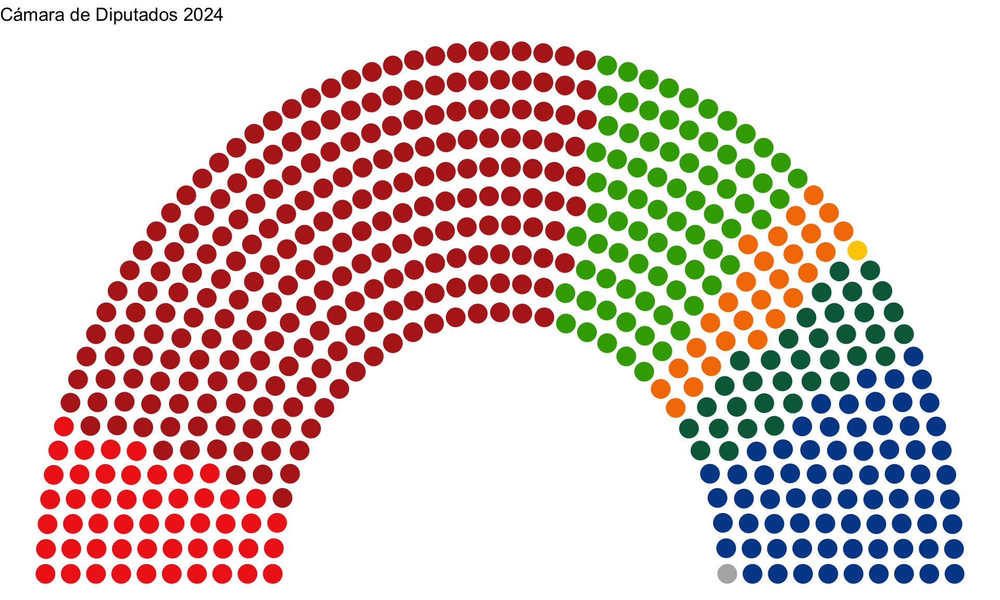
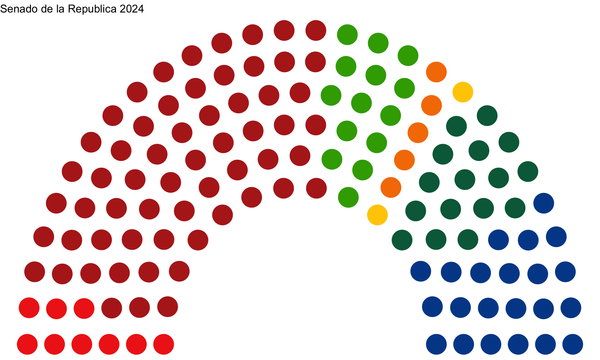

# Libraries used
library(tidyverse)
library(ggparliament)
library(gganimate)
library(janitor)
library(readxl)Project Under Development
How AMLO’s MORENA Took Over Mexican Politics
Libraries used
Importation of Latinobarometro data
Below I made latinobarometro cleaning scirpt and I called it lapop_cleaner which will clean the data for data analysis puposes.
lapop_cleaner <- function(file_path, object_name) {
read_excel(file_path) |>
slice(-1:-3) |> # Remove first 3 rows
distinct() |> # Remove duplicates
row_to_names(row_number = 1) |> # Use the first row as column names
clean_names() |> # Clean column names to make them unique and valid
select(-2) |> # Remove the second column
rename(answer = 1) |> # Rename the first column to 'answer'
filter(!(answer %in% c("País - México",
"País - Total",
"(N)"))) |>
pivot_longer(cols = -answer,
names_to = "year",
values_to = "proportion") |>
mutate(year = as.numeric(str_extract(year, "(?<=x)\\d{4}(?=_)"))) |>
mutate(proportion = case_when(proportion == "-" ~ 0,
TRUE ~ as.numeric(proportion)))
}Latinobarómetro is an annual public opinion survey that measures citizens’ attitudes and perceptions across various Latin American countries on topics such as democracy, governance, and economic conditions. Since its inception in 1995, it has provided valuable insights for researchers, policymakers, and organizations interested in understanding the social and political landscape of the region.
# Assign each file path to its corresponding object name individually and clean the data
JudiciaryIndependence <- lapop_cleaner(
"latinobarometro/LAT_AcuerdoDesacuerdo_El_poder_judicial_debe_ser_independiente_del_ejecutivo.xlsx")
MediaControlPresident <- lapop_cleaner(
"latinobarometro/LAT_AcuerdoDesacuerdo_En_caso_de_dificultades_esta_bien_que_el_presidente_controle_los_medios_de_comunicacion.xlsx")
SupportForMilitaryGovernment <- lapop_cleaner(
"latinobarometro/LAT_Apoyaria_un_gobierno_militar_si_las_cosas_se_ponen_muy_dificiles.xlsx")
PresidentialApproval <- lapop_cleaner(
"latinobarometro/LAT_Aprobacion_de_la_gestion_del_gobierno_que_encabeza_el_Presidente.xlsx")
PoliticalSelfPositioning <- lapop_cleaner(
"latinobarometro/LAT_Autoubicacion_en_escala_Izquierda-Derecha.xlsx")
CongressTrust <- lapop_cleaner(
"latinobarometro/LAT_Confianza_en_el_Congreso.xlsx")
JudiciaryTrust <- lapop_cleaner(
"latinobarometro/LAT_Confianza_en_el_Poder_Judicial.xlsx")
PresidentialTrust <- lapop_cleaner(
"latinobarometro/LAT_Confianza_en_el_Presidente.xlsx")
ElectoralInstitutionTrust <- lapop_cleaner(
"latinobarometro/LAT_Confianza_en_la_institucion_electoral_del_pais.xlsx")
PoliticalPartiesTrust <- lapop_cleaner(
"latinobarometro/LAT_Confianza_en_los_Partidos_Politicos.xlsx")
GovernanceByPowerGroups <- lapop_cleaner(
"latinobarometro/LAT_PAIS_gobernado_por_unos_cuantos_grupos_poderosos_en_su_propio_beneficio_o_para_el_bien_de_todo_el_pueblo.xlsx")Establishing Party Order and Colors
Establishing party order from left to right
party_order <- list(
"PT", # Far-left
"MORENA", # Left
"VERDE", # Center-left
"MC", # Center to Center-left
"PRD", # Center-left
"PRI", # Center-right
"PAN", # Right
"PES", # Far-right
"Other_Parties" # Other/Unknown
)Party colors and and coalition colors in the 2024 elections.
party_colors <- list(
PT = "#f02b19", # Red
MORENA = "#b5261f", # Dark Red
VERDE = "#38a700", # Green
MC = "#f57c00", # Orange
PRD = "#ffcc00", # Yellow
PRI = "#006847", # Green (plus Red/White in their logo)
PAN = "#004a98", # Blue
PES = "#5c246e", # Purple
Other_Parties = "#b2b2b2" # Grey for other/unknown parties
)
coalition_colors <- list(
PT = "#a41e34", # Red
MORENA = "#b5261f", # Dark Red
VERDE = "#a41e34", # Green
MC = "#f57c00", # Orange
PRD = "#ec4891", # Yellow
PRI = "#ec4891", # Green (plus Red/White in their logo)
PAN = "#ec4891", # Blue
PES = "#5c246e", # Purple
Other_Parties = "#b2b2b2" # Grey for other/unknown parties
)Chamber of Deputies
Setting up the deputies data
deputies <- read.csv("deputies_00_24.csv") |>
mutate(party = factor(party, levels = party_order)) |>
arrange(party) |>
filter(year == 2024) |>
rename(seats = elected) |>
select(-year) |>
mutate(coalition = case_when(party %in% c("MORENA", "PT", "VERDE") ~ "morenacoal",
party %in% c("PRD", "PRI") ~ "fcpmx",
TRUE ~ party))Putting the data into a ggparliament data structure
# Use ggparliament's data structure to prepare the parliament plot
deputy_2024_data <- parliament_data(
election_data = deputies,
type = "semicircle", # This sets the semicircular layout
parl_rows = 10 # Number of rows in the semicircle (adjust this based on number of seats)
)Creating a ggplot parliament with the previous datasturcture
# The above fig dimensions were changed to avoid narrowing of the graph
deputy_2024_data |>
ggplot(aes(x = x, y = y)) +
geom_parliament_seats(size = 6, aes(color = party)) +
scale_colour_manual(values = party_colors) +
theme_void() +
theme(legend.position = "null") +
labs(title = "Cámara de Diputados 2024") 
Senate
Setting up the deputies data
senate <- read.csv("senate_00_24.csv") |>
mutate(party = factor(party, levels = party_order)) |>
arrange(party) |>
filter(year == 2024) |>
rename(seats = elected) |>
select(-year) |>
mutate(coalition = case_when(party %in% c("MORENA", "PT", "VERDE") ~ "morenacoal",
party %in% c("PRD", "PRI") ~ "fcpmx",
TRUE ~ party))Putting the data into a ggparliament data structure
# Use ggparliament's data structure to prepare the parliament plot
senate_2024_data <- parliament_data(
election_data = senate,
type = "semicircle", # This sets the semicircular layout
parl_rows = 6 # Number of rows in the semicircle (adjust this based on number of seats)
)Creating a ggplot parliament with the previous datasturcture
# The above fig dimensions were changed to avoid narrowing of the graph
senate_2024_data |>
ggplot(aes(x = x, y = y)) +
geom_parliament_seats(size = 11, aes(color = party)) +
scale_colour_manual(values = party_colors) +
theme_void() +
theme(legend.position = "null") +
labs(title = "Senado de la Republica 2024") 
Expeirmental to make it gif
deputies <- read.csv("deputies_00_24.csv") %>%
mutate(party = factor(party, levels = party_order),
year = factor(year)) %>% # Convert year to a factor
arrange(party) %>%
rename(seats = elected)
# Create a function to prepare data for each year
prepare_parliament_data <- function(par_data, rows_num) {
parliament_data(
election_data = year_data,
type = "semicircle", # This sets the semicircular layout
parl_rows = 10 # Number of rows in the semicircle
)
}
# Specify a custom temporary directory
temp_dir <- tempdir()
# Create animated parliament plot
deputies %>%
group_by(year) %>%
nest() %>%
mutate(par_data = map(data, prepare_parliament_data)) %>%
unnest(par_data) %>%
ggplot(aes(x = x, y = y)) +
geom_parliament_seats(size = 6, aes(color = party)) +
scale_colour_manual(values = party_colors) +
theme_void() +
theme(legend.position = "null") +
labs(title = "Deputies Elected in the Mexican Election by Party ({frame_time})") +
transition_time(year) # Now will only show specified years
animate(animated_plot, renderer = gifski_renderer(temp_dir))